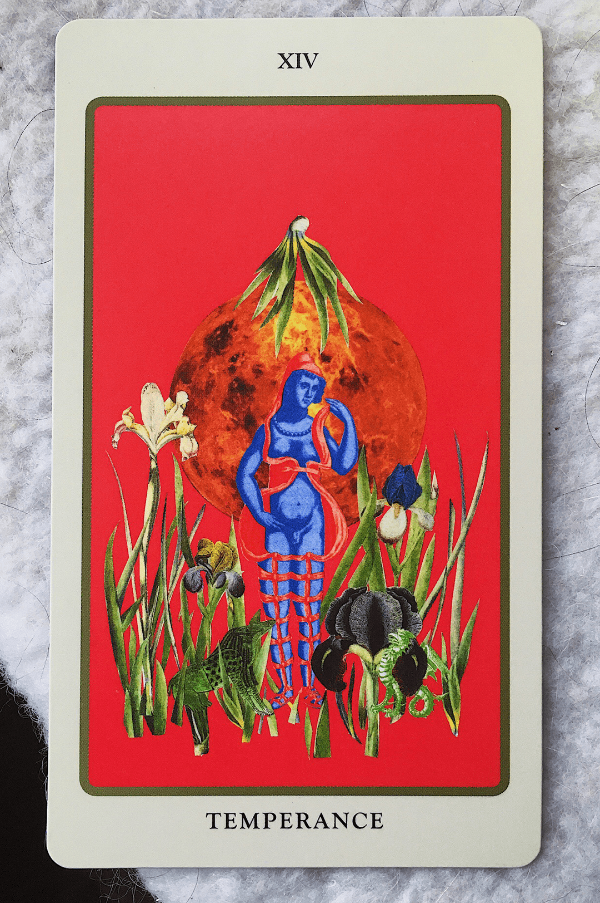

Temperance is contradiction, and the work in this card is balance. It’s that two extremes can coexist, have to coexist, to make a whole. It's not compromise or concession, it’s complements.
I really love Temperance. I relate to its contradictions, in all the obvious multicultural ways and in practice and belief as a theater maker. I’m American and not and borders are fake anyway. I am both man and woman and mystic and academic, I have a Pisces sun and Virgo moon, I preserve and abolish. I like my plays in a theater as opposed to something site-specific. I want to see something conventional and realistic and linear, with queer bodies of color and anywhere but New York.
I think content is more radical than form, or at least the audiences I write to and about are challenged or alienated by content before form can budge. To acknowledge Suzan Lori-Parks: the figures which take up residence inside of me, at this point in my life, are comfortable in a linear structure—to date, my plays contain mostly white people because I write about isolation and assimilation. For now.
I've mostly worked in theater in mid-sized to tiny Midwestern cities; I’m from here and have no interest in abandoning or condescending to this arts market. It's disheartening how producers consider it risky to put five Vietnamese people onstage or cast a multiracial Shakespeare, but a predominantly white ensemble devising messianic, patronizing experiments in performance is a safer bet. If you, audience and artist, cannot handle being de-centered, the border made central, seeing an experience alien to you but otherwise mundane in style, how radical are you really?
I think we have more to learn about each other than about theater.
We always talk about audience, or white people in theater always talk about audience and how to diversify it, which I think is a programming question as well as a financial and cultural one. Beyond prohibitive ticket prices and the cop mentality of audience etiquette, I think what's onstage does the most work to set the culture of viewership.
I don’t care about feeling welcome or allowed in a theater when above all I want to feel safe, or in Midsommar terms, I want to feel held. And I don’t believe in safe space as an ideological gray area where judgment is cast aside and white people are allowed to screw up, I mean I don’t want to be made to see an Edward Albee play that my brown skin could never inhabit, I don’t want to be assaulted by Titus Andronicus, I mean: who cares that I’m wearing leggings at How to Defend Yourself? Program plays about people who need to see themselves, in leggings, with pit stains, ugly and screaming and sobbing.
Temperance is the settling between extremes, a Saturnian peace, a pendulum swinging to center only after knowing both sides.
I was trained on Ibsen, Chekhov, Shakespeare, Brecht, Churchill—I know the canon. I’ve also loved weird theater. I can appreciate Beckett in his context, I read downtown work. I'm excited by Adjoa Andoh and Fiona Shaw as Richard II. I'm also a proud dumbass who goes hog wild when new plays mention Taylor Swift.
I don't think my ambitions are that far out there. I simply want to see my life and different lives onstage, but the ancient professors of my undergrad and patrons who keep regional theater afloat seem to disagree. So I write women who swear and scream and sing Lorde and who hurt and care for each other, I write memes and TikTok into plays, I do not explain diaspora or invite anyone in. I will not be docile, I will not accommodate the majority, I will simply document the world as I experience it. And somehow, despite by politics, despite my ever-increasing hostility toward the state, toward any consodolitation of power, the first thing people have to get over is that I'm not a white man.
The theater I strive for is jubilant, and full of hope, because it's most of what I have. I come from resilience and survival, at the twice-colonized fringes of empire and in its very heart, I look at my home in Kentucky and see struggle & strength against oligarchy, I take what has been forced on me and break and shape it to be mine, I've lived two decades in the middle of America and wrenched it open to fit me and my contradictions. I have hope because we imagine and create compassionate, anarchic futures to save ourselves and our communities. But then again, I tattooed Uranus  on my arm because it corresponds to The Fool.
on my arm because it corresponds to The Fool.